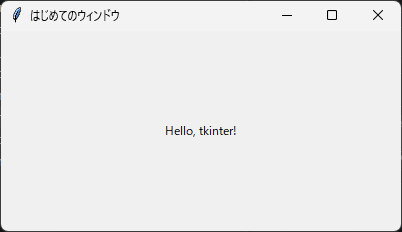

2. 最初のウィンドウ
2.1 ウィンドウを表示する
tkinter で空のウィンドウを表示するには、次の 3 行を書くだけで十分です。
import tkinter as tk
root = tk.Tk()
root.mainloop()
tk.Tk() は、アプリケーションのメインウィンドウを作成します。このウィンドウは、すべてのウィジェットの親（根）になるため、変数名には root がよく使われます。tk.Tk() は 1 つのアプリケーションで 1 回だけ呼び出します。2 つ目以降のウィンドウが必要な場合は、第 7 章で説明する tk.Toplevel を使います。
2.2 mainloop の役割
mainloop メソッドは、イベントループを開始します。イベントループは、マウスのクリックやキー入力、ウィンドウの再描画といったイベントが発生するのを待ち、イベントに対応する処理を呼び出す処理を繰り返します。
mainloop はウィンドウが閉じられるまで戻りません。したがって、mainloop の後に書いた処理は、ウィンドウを閉じた後に実行されます。反対に、mainloop を呼び出さずにスクリプトが終了すると、ウィンドウは表示されてもすぐに消えてしまいます。
2.3 ウィンドウの設定
Tk オブジェクトのメソッドを使うと、ウィンドウのタイトルや大きさを設定できます。主なメソッドを次に示します。
メソッド |
説明 |
|---|---|
|
タイトルバーに表示する文字列を設定します。 |
|
ウィンドウの大きさと位置をピクセル単位で設定します。 |
|
ユーザーが縮められる最小の大きさを設定します。 |
|
ユーザーが広げられる最大の大きさを設定します。 |
|
横方向と縦方向のそれぞれについて、大きさの変更を許可するかどうかを |
|
ウィンドウを常に最前面に表示します。 |
geometry の文字列に含まれる x は、小文字のアルファベットのエックスです。
これらの設定を加えたサンプルコードを次に示します。
1"""第 2 章: ウィンドウを表示し、タイトルやサイズを設定するサンプルです。"""
2
3import tkinter as tk
4from tkinter import ttk
5
6
7def main() -> None:
8 """設定を加えたウィンドウを表示します。"""
9 root = tk.Tk()
10
11 # ウィンドウの設定
12 root.title("はじめてのウィンドウ") # タイトルバーの文字列
13 root.geometry("400x200+100+100") # 幅 x 高さ + x 座標 + y 座標
14 root.minsize(300, 150) # ユーザーが縮められる最小サイズ
15 root.resizable(True, False) # 横方向のみサイズ変更を許可
16
17 label = ttk.Label(root, text="Hello, tkinter!")
18 label.pack(expand=True)
19
20 # イベントループを開始します。ウィンドウを閉じるまでここで待ちます。
21 root.mainloop()
22
23
24if __name__ == "__main__":
25 main()

実行結果
ttk.Label は文字列を表示するウィジェットで、pack はウィジェットをウィンドウに配置するメソッドです。どちらも次の章以降で詳しく説明します。
2.4 イベント駆動プログラミング
上から順に処理を実行して終了する通常のスクリプトと異なり、GUI アプリケーションは、ユーザーの操作をきっかけに処理を実行します。このような書き方をイベント駆動プログラミングと呼びます。
tkinter のプログラムは、一般に次の流れで動作します。
tk.Tk()でメインウィンドウを作成します。ウィジェットを作成して配置します。
ボタンが押されたときなどに呼び出す関数（コールバック関数）を登録します。
mainloopでイベントループを開始します。イベントが発生するたびに、登録したコールバック関数が呼び出されます。
コールバック関数を実行している間、イベントループは次のイベントを処理できません。そのため、コールバック関数の中で時間のかかる処理を実行すると、画面が反応しなくなります。この問題への対処方法は第 10 章で説明します。